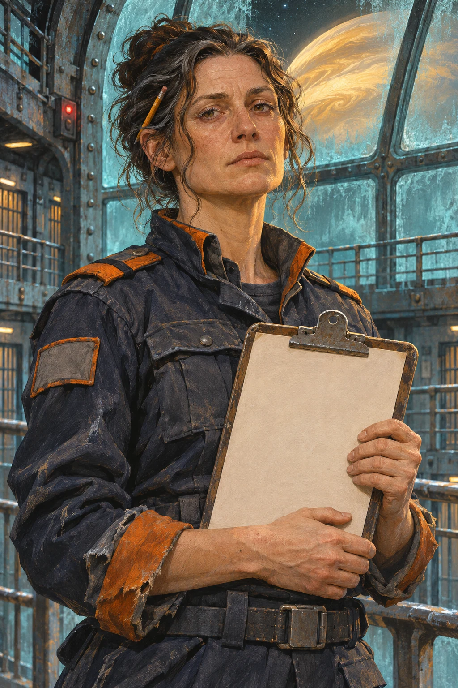
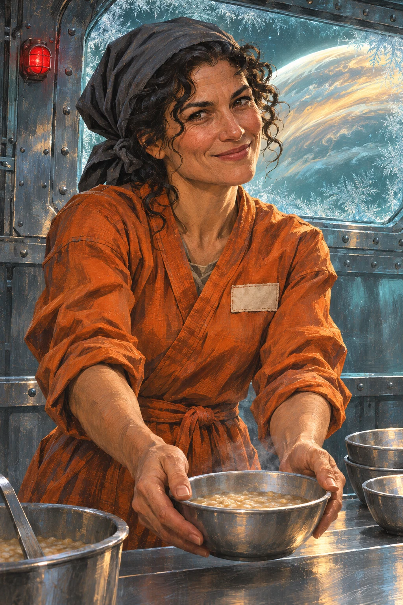

Выйти на внешнюю обшивку и попасть на борт «Инея» до сирены — вместе с теми, кого вы решили взять с собой.

Кая ШтернЭш ЛарАрон ТейИлона МарчОскар ВельдПетра ЛоусАнсель БрамЯков Стрель

Роза МинтХана ФерстАдель МерцСор Дар
Если партия изменила план
Если никто не вышел на обшивку
«Иней» отходит по расписанию. Сверьте имена оставшихся с рапортом и сыграйте перекличку на станции. При разделении дайте короткий кадр и тем, кто достиг борта, и тем, кто сам решил остаться.
Восьмое утро. Стекло в рамах целиком белое от инея, и Кордею за ним видно только там, где кто-то ночью протёр окно ладонью. Номера на робах сегодня читают вслух в последний раз. На стенде у входа в блок Б с утра висит лист «Перекличка перевода»: час посадки, Прощальный причал, направления, номера по порядку. В этот час экипаж передадут конвою Службы переводов и разведут по четырём направлениям.
В коридоре пахнет холодным железом и мятным чаем из лазарета. Охрана сегодня ходит молча и смотрит на часы чаще, чем на людей.
Между блоком Б и маленьким шлюпом у мачты — Палуба грузовых смен, холодный металл шлюза 3, двенадцать шагов по внешней обшивке и три окна Стеклянного обхода над головой. За стеклом ни звука: только облака Кордеи и огни мачты, которые мигают ровно, как все эти дни. Кая выходит к началу строя. «Номер. Лицо», — говорит она и поднимает дощечку.
Подготовка и роли
Финал: 35 + 25 + 90 минут, перерыв до обшивки. КАРТА ФИНАЛА — раздатка «Памятка шлюза 3 и карта выхода»: до раунда 1 по фразе на пункт. Правило — встреча «Обшивка». ПОРЯДОК: «по строке» (П 20:00, выход 20:40; при переносе 12:00 и 12:40) или «до строки» (окно, шлюз 3 к 19:10; при переносе нельзя; позднего пути Б тогда нет). СИРЕНА в конце раунда по отметкам на П (до строки — при уходе): 0–2 — 8, 3–4 — 7, 5–6 — 6, 7–8 — 5, 9+ — 4; путь В +1; не больше 9. ВОЗДУХ: 8 с полными баллонами, иначе 4; спутникам 4, запасной баллон +3 одному. КОНВОЙ: 3/3/4/4 при 5/6/7/8 игроках; −1 при 3–4 трещинах, −2 при 5–6, −1 за путь В; путь Б, ранний или поздний, в начале раунда 2 (до строки — при выходе) уводит ближайшего к люку. Если конвоир один, он остаётся, но пропускает первую атаку. По строке конвой на поле с раунда 1, до строки — с раунда 3. ОКНА: по строке без Г — все три с конца раунда 1; с Г — Окна 1 и 3 молчат весь бой, Окно 2 (стрелок конвоя) с конца раунда 3. До строки без Г — Окно 2 с конца раунда 1, Окна 1 и 3 с конца раунда 3; с Г — Окна 1 и 3 молчат, Окно 2 с конца раунда 4. Карточка расстановки — Окно 2 весь бой с помехой. Перо (бонусное действие) — раз за бой одно окно молчит раунд. ШЛЮЗ: по строке с А или Г — молчит; без них — замыкающий конвоя с конца раунда 3 (уговорили Вельда и Лоус — с конца 4, провал — с конца 2); до строки — дежурные с конца раунда 2. КАЯ: по строке без Г — «приказ в силе» с 12/1; с Г — приказа нет, стоит у 12/1, в раунде 2 «Конвой, оружие вниз» (конвой и Окно 2 замирают на раунд 2) и уходит; до строки — с раунда 3: без Г сразу «ось», с Г — «оружие вниз» (замирают на раунд 3) и уходит. ЛЮК: Б — с раунда 1, Б «поздно» — с раунда 2, иначе стук. ДВЕРЬ 3: с А — Вельд и Лоус, Эш в изоляторе — изнутри, иначе открытый коридор; до строки — Эш допуском.
Севра Дан
Бор Камен
Илай Рош
Нара Вель
Мир Авель
Сцена 1 · 35 минут
Утро перевода
08:00, блок Б. Кая читает ровно, как шаги: «Номер. Лицо. Номер. Лицо». Если Т-20-00 так и не устроен, сначала +1; иначе первая чистая −1, и больше в этот день не снимется ничего. На стенде — «Перекличка перевода». При переносе «20:00» зачёркнуто и вписано «12:00»: эта сцена длится 15 минут, окон нет, остаются только короткие жесты ниже, а освободившееся время уходит на обшивку. Лазарет: Хана выключает чайник: «Можно я при вас схожу на медосмотр изолятора?» Если Эш там, она возвращается с запиской со звездой: «Дверь изолятора я оставила открытой. Медицинский осмотр — моё право». Окно заявлений: Адель протягивает Севре запечатанный конверт: «Ответ передаётся лично. Экипаж „Стрижа“, по именам, лист один. Отдайте тому, кто будет читать снаружи». Кухня: Агата отдаёт Сору последний ломоть — целый. Сор долго держит его в руках: «Сначала хлеб. Потом — как получится». Палуба: если стука ещё нет и Арону не лгали, он показывает рукав: «Постучите вот так. Не громче — металл и так всё слышит». Солгавшим не показывает: в финале у них только незнакомый стук. Стол решает: «по строке» — на перекличку перевода — или «до строки», окном к 19:10 к шлюзу 3. Ведущий говорит сразу: уйти до строки — значит не застать Илону у стола перевода, позднего пути Б не будет.
Выборы
Идти «по строке»: на перекличку перевода и к шлюзу по знаку Эша или Севры.
Идти «до строки»: потратить окно и быть у шлюза 3 к 19:10 (при переносе нельзя).
Потратить остальные окна: шкалы с Ханой, точное число людей для Арона, слово Вельду и Лоус.
Решить, кто ведёт Эша, Якова и Розу и кто несёт запасной баллон.
Проверка и путь без броска
Внимательность Сл 10 — заметить, что старший конвоя дважды смотрит на часы, отсчитывая сорок минут до выхода на обшивку: успех — экипаж знает, что посты займут только к 20:40, и уход «до строки» без окна не стоит палочки. Провал: время узнают от Каи — «В 20:40 на обшивке будут мои люди. Я сказала вам больше, чем могла», — но уход «до строки» без окна стоит +1 палочкой в клетку П. Изолятор Хана открывает по праву врача — это не дело.
Если не получилось
Если окон не осталось и время не узнали, выход «до строки» всё равно возможен: +1 палочка в клетку П. Если Хана к изолятору не пошла, Эш стучит в стену условленный ряд: дверь шлюза он откроет и так.
Сцена 2 · 25 минут
20:00, Прощальный причал, или 19:10, шлюз 3
ПО СТРОКЕ. 20:00 (при переносе 12:00), Прощальный причал. Двери парома раскрыты, конвой выстроен вдоль заклёпок. Кая читает номера конвою: «Т-20-01. Лицо. Т-20-02. Лицо». Последние палочки проявляются: ведущий пишет на карте раунды до сирены. Если пути Б нет, у стола перевода сидит Илона с пером. Показать ей строку 8 — копией или по памяти с книжкой лиц — значит путь Б «поздно»: «Я подписываю ровно в восемь. Сейчас без двух. Хорошо. Тогда я поеду с грузом. Запишите меня местом» (при переносе — «ровно в полдень»). Её проводят на «Иней» через грузовой рукав по её бумагам перевода. Дамир, если он за столом, отдаёт ей выписку из журнала «Стрижа». Комендант читает с листа раньше, чем что-то случилось: «Т-20-00 подал знак. Экипаж бросился к шлюзу 3. Записано». По знаку Эша — или Севры, если Эш в изоляторе, — экипаж срывается, охрана отходит к стенам, как по разметке. Сор шагает под ноги старшему конвоя и ломает хлеб: «Сначала хлеб, старший». Брам, не поднимая глаз: «Старшая охраны отдала приказ: огонь на поражение. Записано». Кая — ему: «Я считаю людей. Приказа я не отдавала». В шлюзе 3 Вельд и Лоус. С путём А Вельд: «Есть», — и открывает внутреннюю дверь; Лоус: «Внутренняя дверь закрывается отсюда. Я закрою. Я останусь с этой стороны». ДО СТРОКИ. 19:10, шлюз 3: Эш открывает его старым допуском техника; шлюз пуст. В обоих случаях — скафандры, шкалы, памятка шлюза, цикл, окошко люка. Ведущий дочитывает карту выхода. Перерыв перед обшивкой.
Выборы
По строке: бежать к шлюзу 3 по знаку Эша или Севры.
Показать Илоне строку 8 у стола перевода, если пути Б ещё нет, — и отдать выписку Дамира.
Без пути А — уговорить Вельда и Лоус закрыть за вами внутреннюю дверь.
Распределить скафандры, запасной баллон и спутников до цикла шлюза.
Проверка и путь без броска
Без пути А, по строке — Харизма (Убеждение) Сл 13, с преимуществом, если рядом Эш («Я пломбу поставил. Вы отказались. Закройте хотя бы дверь»). Успех: Вельд и Лоус закрывают внутреннюю дверь, и замыкающий конвоя начнёт огонь шлюза на раунд позже. Провал: они отходят в сторону и дверь остаётся открытой — замыкающий начнёт раньше; точные раунды — строка «Шлюз» карты финала. Сами Вельд и Лоус в спасённых не стреляют. Последние палочки проявляются на перекличке перевода; «до строки» — в миг ухода к шлюзу.
Если не получилось
Если кто-то опоздал к рывку, он выходит на обшивку в раунде 1 из столбца 1 вместе с последними. Если Илона не поверила строке без листа, она всё равно не подписывает отчёт в 20:00 — но остаётся на станции, и люк открывается только стуком.
Сцена 3 · 90 минут
Обшивка
Внешний люк открывается беззвучно. Ряды заклёпок до самой мачты, кольца через каждые три шага, над головой три окна-амбразуры, под ногами край кольца и облака Кордеи. Слышно только своё дыхание и канал обшивки. Это встреча «Обшивка»: всё правило — там, числа — на карте выхода. Если выход «до строки», ведущий говорит одной фразой: «Внутри воет тревога; в окне 2 загорается свет; у мачты пока никого». Если тогда Кая в раунде 3 скажет «оружие вниз», старший конвоя отвечает в канал: «Приказ Службы переводов в силе. Старшая нам не командир». Эш пристёгивается первым и считает вслух: «Раз. Два. Три заклёпки. Пристегнулся. Видите? Никто — а пристегнулся». Арон по каналу, коротко: «Вижу вас. Стучите, когда дойдёте. До сирены я ваш». Кая у мачты говорит одно из двух. «Окна — огонь». Или, если прочла своё имя: «Окна, ждать моей команды», а во втором раунде: «Конвой, оружие вниз. Это мой приказ, а не его». Если инспектор на борту, во втором раунде канал оживает её голосом: «Говорит инспектор Марч. Мандат Службы надзора. Запишите меня свидетелем, а их — живыми». Кая, потеряв половину сил, уходит в шлюз 4: «Я не умру за эту строчку. И вы не умрёте». Сорванного ловит пристёгнутый сосед; упавший висит на кольце, и его тащат. Арон: «Сирена. Захваты запираются. Кто в люке — держитесь». «Иней» отходит; Юна, если она на борту, первым делом отправляет сообщение Якова.
Выборы
Идти шагами от кольца к кольцу и вести спутников.
Рывком пройти открытый участок, пока окна молчат или восток ещё не в бою.
Ослепить одно окно световым пером (раз за бой).
Тащить упавшего — или оставить его и дойти самим.
Постучать в люк «Инея», если путь Б его не открыл.
Проверка и путь без броска
Броска на исход нет: ход, огонь и сирену решают встреча «Обшивка» и карта выхода. Новых отметок нет. Без броска — ловля сорванного соседом и буксировка упавшего. Герой отсутствующего игрока на обшивку не выходит. Если кто-то касается X-карты, оставшиеся раунды пересказывают по ориентиру встречи, а кто на борту, решают нынешние позиции. Когда «Иней» отошёл, смотрите не в таблицу, а на поле.
Если не получилось
Упавший на обшивке не умирает: скафандр защёлкивает карабин, он висит на кольце, и его можно дотащить до люка. Кого до сирены не довели, конвой заводит в шлюз 3 живым — плен и раздельный перевод, не казнь: это исход проигранного выхода, а не наказание.
Манифест парома без пяти номеров
Схема посадки парома на день 8, отпечатанная на широком листе: ряды кресел, у каждого номер, мелкие стрелки к направлениям. Несколько мест аккуратно заштрихованы серым, и штриховка лежит ровно, по линейке, а не от руки.
Что можно установить
Т-20-00, Т-20-01, Т-20-05, А-114 и А-117 мест на пароме не имеют. Мёртвым места не нужны: список посадки совпадает со строкой 8 отчёта.
Получение
Бор или Арон видят схему у погрузки; в день 7 Кая вывешивает её у входа.
Запасной путь
Раздатка «Перекличка перевода» в вечере 8 показывает те же пустые места.
Изменения после решений
Если Каждый герой, вышедший на обшивку, на борту при отходе → Исход «Шлюп не отвечает»: вы беглецы, а не оправданные. Кто ещё в шлюпе — Эш, Яков и Роза, инспектор, конверт Адели — тот улетает с вами.
Если Хотя бы один вышедший герой на борту и хотя бы один нет → Исход «Борт и обшивка»: оставшихся конвой заводит в шлюз 3 живыми, и строка 8 о погибших не исполняется. Если инспектор на борту, она увозит отчёт и знает, что оставшиеся — живые свидетели.
Если Ни одного вышедшего героя на борту → Исход «Пустой люк»: Арон отходит по сирене один или со спутниками, которых успели завести; экипаж в шлюзе 3, перевод раздельный. Со станции ушло только то, что отдали на борт.
Если Полных баллонов нет → Ведущий говорит это вслух до раунда 1, по строке «Воздух» карты выхода.
Выдать в нужный момент
Перекличка перевода — Вечер 8, сцена 1: висит на стенде у входа в блок Б с утра. При переносе (9 отметок на вечерней дня 7) «20:00» зачёркнуто и вписано «12:00».
Памятка шлюза 3 и карта выхода — Вечер 4: лист кладётся на стол как карта выхода с пустыми строками; ведущий вписывает трещины, пути и предметы по мере того, как они случаются, и дочитывает карту вслух перед раундом 1 финала. Верхняя часть, памятка, — лист со стены шлюза 3: герои видят его в вечере 6 у шкафчиков или в вечере 8 в шлюзе.
Завершение вечера
Сирена в одну долгую ноту, захваты мачты запираются, «Иней» отходит. Ведущий смотрит, кто из вышедших героев на борту, и читает только свой исход: все внутри — «Шлюп не отвечает»; кто-то внутри, кто-то снаружи — «Борт и обшивка»; никого — «Пустой люк». Последнее слышат все — и в кабине, и в шлюзе 3: ровный голос коменданта по общему каналу, как с листа: «„Иней“, вернитесь к мачте. Так записано». Пауза. «„Иней“, вернитесь к мачте». Арон не берётся за микрофон. Шлюп не отвечает.